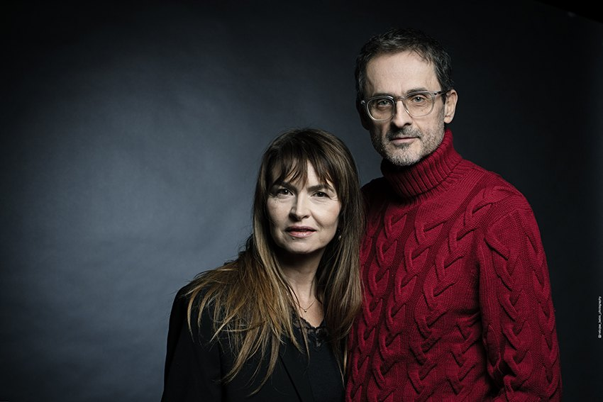

It was 2017 when we first discovered this place — a plateau at 2,000 meters above sea level, the second-largest pastureland in Europe — whose mysterious name can be interpreted as “Shining Heights” or “Mountain Ocean.” We met Gara and Nada at the very moment news arrived that this precious mountain, whose snows provide water for the entire region, was to be turned into a military shooting range. From our first encounter, it was clear that there was something more to them — that they were part of a larger story, reminiscent of epics from ancient times but rooted in a painful present. Their destiny carried the echo of Greek tragedy, and we felt compelled to share their lives and understand their paths. For more than seven years, we quietly explored, lived together and gathered elements that carry the power of this place and its people. We did not ask — we listened, until the story revealed itself. Gara and Nada represent mothers and daughters across centuries who, despite everything, have nurtured a culture of love. The film also reflects our contemplation of the deep connections between women and land, patriarchy and militarization, duty and love.
— Biljana Tutorov and Petar Glomazić

Biljana Tutorov
Director & Producer
Biljana Tutorov is a writer, director and producer of feature and documentary films, video works and performances focused on women-driven stories that examine contemporary political reality, the state of democracy and environmental protection. After graduating in Art History from Université Catholique de Louvain in Belgium, Biljana studied Visual Anthropology at the École Pratique des Hautes Études in Paris and acting at the Jacques Lecoq School. She is the founder of Wake Up Films (www.wakeupfilms.net), an independent production company, as well as the founder and Head of CIRCLE (www.doccircle.me), an international training initiative supporting women and gender-expansive filmmakers. Biljana is an inaugural Diane Weyermann Fellow, an EAVE and EURODOC alumna, member of European Film Academy and an advisory board member of DAE Documentary Association of Europe.
Petar Glomazić
Director
Petar Glomazić graduated from the Faculty of Mechanical Engineering at the University of Belgrade in 1995, specializing in Aerospace Engineering, and worked for more than 25 years as an expert in civil aviation. In 1996, he also completed the Serbian Radio-Television School for documentary and began working as editor in their Educational Program Department. In 2014, he entered the world of film production as an associate producer at Wake Up Films in Novi Sad, and in 2021 he founded the production company Ardor Films. A passionate life-long mountain climber, Peter has extensively researched regional traditions, people and landscapes. He is a member of the Documentary Association of Europe (DAE), the International Documentary Association (IDA) and a co-founding member of the Save Sinjajevina Association. In 2023, he received the inaugural Diane Weyermann Fellowship championing three non-fiction projects worldwide. To Hold a Mountain is his debut feature documentary.
Credits
Writers and Directors
Biljana Tutorov, Petar Glomazić
Featuring
Mileva Gara Jovanović, Nada Stanišić
Director of Photography
Eva Kraljević
Editor
George Cragg
Additional editor
Catherine Rascon
Original Score
Draško Adzić
Sound Design
Julij Zvornik, Samo Jurca
Produced by
Wake Up Films
In co-production with
Les Film de L’œil Sauvage, Ardor Films, Cvinger Film, Kinematograf, RTV Slovenja
Produced by
Biljana Tutorov
Producers
Petar Glomazić, Quentin Laurent, Rok Biček
Executive Producer
Megan Gelstein
Executive Producers
Pedra Costa, Andrea Meditch, Bianca Oana, Jean Tsien, Sean Flynn, Ben Fowlie, Lucila Moctezuma, Chandra Jessee, Rebecca Lichtenfeld, Megha Agrawal Sood Shanida, Scotland Meadow Fund
Co-Producer
Dijana Cetina Mlađenović, Stenola Productions
Associate Producer
Veliša Popović
In association with
Catapult Film Fund, Points North Institute
With the support of
Eurimages, Meadow Fund, Doc Society Climate Story Fund, InMaat Foundation, IDA Enterprise Documentary Fund, Aide aux Cinémas du Monde - CNC, Institut Français Region Sud Point, Slovenian Film Centre, Serbian Film Centre, Film Centre of Montenegro, Chicken & Egg Pictures, Croatian Audiovisual Centre, UNIQA SEE Future Foundation, City of Novi Sad, Viva Film Shelter Prod, Tax Shelter.be, ING, The Tax Shelter of The Federal Government of Belgium